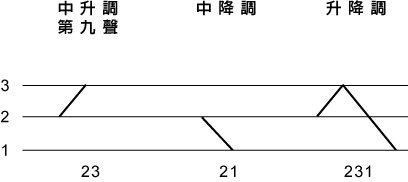

| 第三課 | 變調 |
次要調型有三個：中升調、中降調、升降調。為了指稱的方便，模倣「八
 |
| 一 | 第九調 |
中升調又叫「第九聲」，在韻腹上標示如下所示的雙尖音號，如 '  '。出
'。出
| 1 三疊音詞變調： | 金金金 k |
| 2 外來語： | 先生 si |
| 3 合音： | 下昏 |
| 二 | 中降調 |
中降調常出現在輕讀的虛詞，很像陰入本調，因此有人把它歸類為陰入聲
| 1 感嘆詞： | ueh21! 喂！ |
| 2 語助詞： | honnh21? 乎？ |
| 3 合音詞： | buaih21 無愛（不要） |
| 4 輕聲詞前字： | 落‧去 lueh21（下去） |
| 三 | 升降調 |
殊符號。如：
| 1 感嘆詞： | h |
| 2 三疊音詞： | kim231kim22 kim33 |